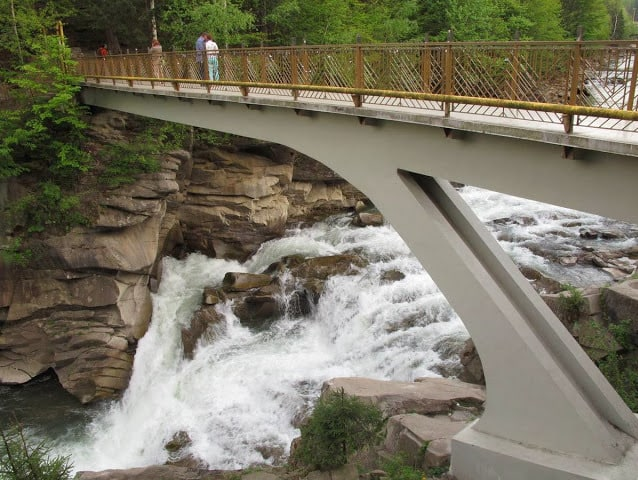

Вигляд води, яка спадає з висоти, завжди зачаровує усіх без винятку. Водоспади – одне з найпрекрасніших творінь природи. Милуватися їхніми пейзажами можна годинами.В Карпатах річкові пороги мальовничих норовливих водоспадів з бризгами кришталево чистої води приваблюють туристів та місцевих жителів щороку. Кожен з них особливий по-своєму, малий чи великий – чарівний і неповторний.Проте, один із найвідоміших та напрочуд популярних є водоспад "Пробій", де кожну хвилину товпляться та фотографуються люди. Це чи не найбільш знана і відвідувана місцина в Яремче.
Водоспад Пробій вважається одним із самих мальовничих і найповноводніших водоспадів Карпат. Якщо будете в Яремче, однозначно варто до нього прогулятися. Пробій (інша назва — Яремчанський водоспад) — каскадний водоспад в Українських Карпатах, на річці Пруті. Розташований у межах міста Яремче Івано-Франківської області. Утворився в нижній частині Яремчанського каньйону річки Прут, у місці виходу на поверхню стійких до ерозії гірських порід — ямненських пісковиків (верхні шари) та аргілітів і алевритів (нижні шари).
Чому Пробій?Водоспад Пробій - красиве, мальовниче і популярне місце в Яремче. Мабуть свою назву, водоспад отримав не через свою красу і навіть не через висоту, а через те з якою потужністю потік пробивається крізь скелі і спадає вниз.Водоспад немов «пробиває» шлях річки Прут серед гірських порід, скидаючи вниз величезну кількість води, звідси і назва - «Пробій». Вода в ньому котиться по камінню з невеликої висоти (близько 8м), проте навесні, коли гірський сніг починає танути, водоспад буває дуже повноводним. Потужні струмені води так і вирують в глибокій кам'яної чаші, а протягом настільки сильне , що зносить все на своєму шляху. За потужністю потоку, Пробій займає перше місце серед водоспадів у Карпатах.
Міст над волоспадомНад водоспадом знаходиться пішохідний місток, завдовжки дванадцять метрів та заввишки 20 м. Побудований був уже давно, але як і раніше ще міцний. Є улюбленим місцем для тих, хто любить дивитися на бурхливі потоки води, що біжать вниз.
Найбільші відчайдухи з місцевих жителів давно вивчили водоспад Пробій, тому за гроші можуть зістрибнути вниз, якщо ви їх про це попросите. Однак стрибати – смертельно небезпечно, особливісті завихрення потоку іноді ускладнює пошук авантюристів.
Кажуть, що за водоспадом є впадина глибиною 30 м. Водоспад має перепад висоти в дванадцять метрів, він досить потужний і багато туристів називають його «української Ніагарою». Можливо, щось в цьому є. Адже кожну секунду річка Прут скидає в кам'яну чашу, яка знаходиться внизу і утворена самою природою, кілька тонн води.
Коли вслухатися в мелодію звуків, то можна почути музику сьогодення і відгомони минулих століть. Якщо акуратно спуститися ближче до води, можна відобразити дуже красиві моменти на фото.
Гуцули впевнені, що місця біля гірського водоспаду мають потужну енергетику. Біля Пробію її відчуває кожен. Тут можна набиратися життєвої сили, а згодом відчути як усі проблеми та неспокій немов водою змиває.
За історичними даними, висота водоспаду, трохи більше як століття тому, була утричі вищою! Коли русло ріки готували сплаву лісу, кілька разів у цьому місці гриміла вибухівка. Русло поглибили а ось водоспад зменшився. Зараз висота водоспаду - 8 метрів.
Тепер річкою вже не сплавляють ліс. Проте її глибоке русло стало чудовою забавою для туристів-екстремалів. Зараз Пробій слугує кінцевою точкою рафтингового маршруту Яремчанським каньйоном. За умови достатнього рівня води у Пруті, екстремали сплавляються від Ворохти до Яремче.
Протяжність такого сплаву — близько 40 км.Трохи нижче водоспаду є розлога і глибока улоговина зі спокійнішою течією. А вгору від Пробія веде промаркований туристичний маршрут на хребет гори Явірник. Перед водоспадом та за ним містяться два сувенірних ринки Яремча. Над водоспадом розташований знаменитий ресторан «Гуцульщина».
 Чому варто відвідати природне диво, воспад Пробій?Одна з найчастіше відвідуваних у Карпатах природних пам’яток;
Вражає силою потоку бурхливої води;
Відчувається спокій та умиротворення;
Біля водоспаду легко дихається. Іонізоване стрімкими водоспадами повітря, яке насичене високим вмістом кисню та ароматами Карпатських лісів – сприяє профілактиці захворювань органів дихання.
Більшість карпатських водоспадів можна роздивитись лише з річкових долин, а Пробій — з усіх можливих ракурсів. Наприклад, можна спуститись до самого водоспаду зі сторони ярмарку у Яремче.
У радянський час на березі водоспаду знімали свої кліпи Володимир Івасюк, Назарій Яремчук та Софія Ротару. Саме після цього водоспад Пробій і став популярним туристичним місцем.
Подейкують, що до водоспаду приїжджають екстрасенси, аби набратись життєвої енергії та підзарядити свої біологічні «батарейки». Гуцули впевнені, що місця біля гірських водоспадів мають потужну енергетику. Біля Пробію її відчуває кожен. На Пруті, який має норовистий характер, чимало маленьких водоспадів - біля них легко дихається, а згодом відчуваєш, як усі проблеми та неспокій немов водою змиває…
За легендою, у цих місцях у давні часи любилися хлопець Прут та дівчина Говерла. Батьки, дізнавшись про їхнє кохання, сказали, що ніколи не благословлять їхній шлюб. Дівчина закаменіла з горя – перетворилася на гору. А хлопець так за нею тужив, що з його сліз утворився струмок, і з нього народився стрімкий та бурхливий Прут.
РозташуванняВодоспад Пробій знаходиться за адресою: Яремче, вул. Петраша.
Координати GPS: 48.4392331, 24.53973510000003